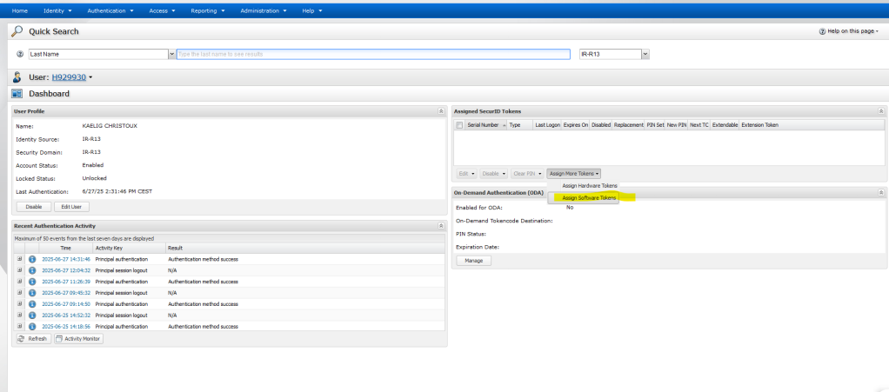
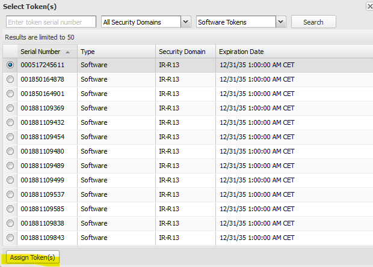
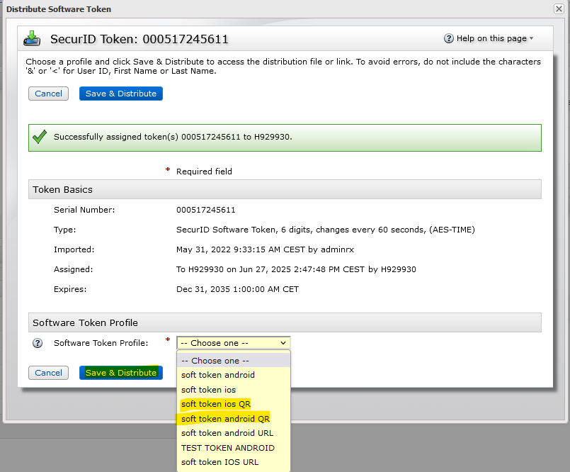
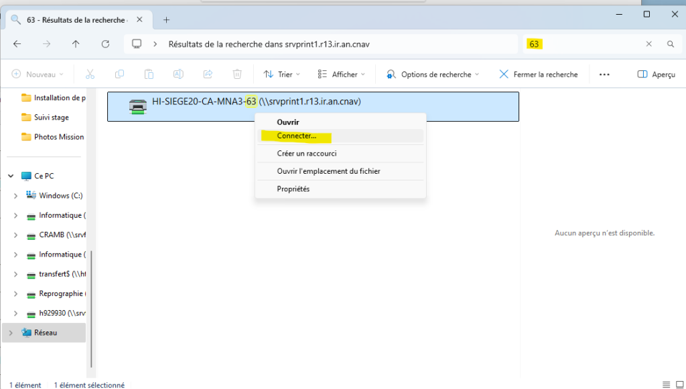
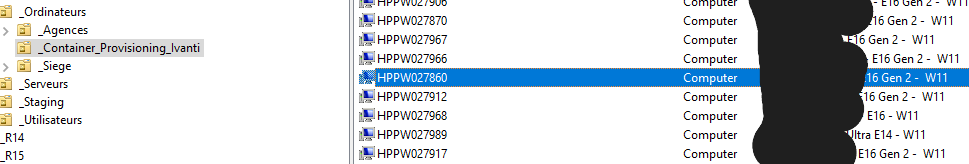

L'étape 2 se réalise lorsque l'utilisateur vient changer son poste.
Dans un premier temps, il faut lui demander s'il a apporté son téléphone afin de configurer Colibri, qui est le VPN qui permet de télétravailler.
Scripts de sauvegarde et restauration
Une fois son PC récupéré, il faut brancher un disque dur sur son PC contenant des scripts de sauvegarde et de restauration des données, les scripts se présentent sous le format .vbs, leur contenu est disponible en cliquant sur les boutons :
On lance ensuite le script de Sauvegarde sur l'ancien PC afin de sauvegarder les données de type :
- ▹ Signatures électroniques Outlook
- ▹ Fichiers et documents sauvegardés en local
- ▹ Profil Firefox (contenant l'historique et les marques-pages)
- ▹ Archive Outlook si l'utilisateur en a
Configuration de Colibri (VPN)
Pendant que le disque dur sauvegarde toutes les données, configuration de Colibri ainsi que des imprimantes réseaux utilisées.
Pour la configuration de Colibri, il suffit simplement que l'utilisateur se connecte comme en télétravail, c'est-à-dire en mettant ses identifiants, puis un code PIN seulement connu par l'utilisateur suivi de 6 chiffres qui sont générés aléatoirement toutes les 1 minute sur une application mobile. Cela charge donc les paquets du VPN, c'est pour cela que la première connexion doit se faire sur site, car en télétravail, l'outil ne peut pas télécharger les paquets.
Concernant Colibri, j'ai une part de travail à faire seulement quand l'utilisateur n'a jamais fait de télétravail ou souhaite modifier son appareil mobile de connexion. Pour cela je dois créer ou remplacer un token comme expliqué ci-dessous :
Création d'un token
Tout d'abord, je me connecte à la console RSA qui permet la gestion des tokens avec mes identifiants, puis il y a une barre de recherche, je rentre le nom de famille de la personne à qui je souhaite ajouter le token.
Je clique droit sur Assign Token, puis Assign Software Token car c'est un token pour le logiciel RSA sur téléphone.
Je choisis ensuite le token que je veux assigner (je choisis n'importe lequel car ils ont tous la même utilité).
Pour finir, je choisis soit l'option Soft Token iOS QR ou Soft Token Android QR en fonction du téléphone de l'utilisateur. « QR » correspond au fait de réaliser la configuration de l'application mobile avec un QR code directement.

Enfin, il faut se rendre sur un autre site pour que l'utilisateur s'y connecte afin de recevoir son QR code (scanné via l'application RSA sur téléphone) et afin de choisir son code PIN comme expliqué ci-dessus.
Configuration des imprimantes réseaux
Il faut ensuite connecter les imprimantes réseaux que l'utilisateur utilisait sur son ancien PC.

Il faut d'abord se rendre dans le raccourci « Serveur d'impression » situé sur le bureau de l'ordinateur.
Puis rentrer dans la case « rechercher », le numéro de l'imprimante (63 dans l'exemple ci-contre) puis cliquer sur Connecter afin de l'affilier au PC.
Une fois Colibri configuré et les imprimantes ajoutées, il faut donc restaurer les données sauvegardées préalablement sur le disque dur. On vérifie que les marques-pages Firefox ou encore les archives et signatures Outlook ont bien été importés ainsi que les données sauvegardées en local.
Les nouveaux ordinateurs n'ayant que 2 Ports USB disponibles, il faut demander si les utilisateurs ont besoin de plus en télétravail (si utilisation de souris + clavier + casque USB). Puis on leur fournit une nouvelle alimentation.
Mouvement dans l'Active Directory
Le changement de poste est donc pratiquement fini, il nous reste juste à faire un mouvement dans l'Active Directory.
Tout d'abord, il faut retrouver le nom de l'utilisateur à qui appartient le PC dans Container_Provisionning_Ivanti où se trouvent tous les ordinateurs qui ne sont pas rangés dans un répertoire et affectés très récemment ou tout juste masterisés. (Les noms et prénoms sont effacés pour le respect des personnes).

Ensuite il faut déplacer l'ordinateur correspondant à l'utilisateur dans Siège ou Agences, en fonction d'où l'utilisateur est situé. Puis nous devons renseigner « en attente de suppression » à la fin de la description de l'ancien ordinateur.